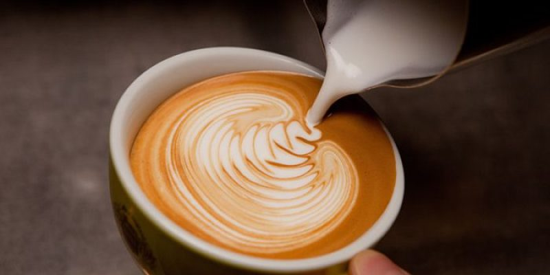

Tu lugar de encuentro con el sabor
Café de especialidad, pastelería casera y un ambiente pensado para que te sientas como en casa. ¡Bienvenido!
Café de especialidad, pastelería casera y un ambiente pensado para que te sientas como en casa. ¡Bienvenido!
En nuestra cafetería, el café es mucho más que una bebida: es una experiencia. Nos apasiona trabajar con granos de origen único, seleccionados cuidadosamente de fincas que cultivan con respeto por la tierra y las personas. Cada taza que servimos es el resultado de un proceso meticuloso, desde el tostado artesanal hasta la preparación precisa, todo pensado para resaltar los matices únicos de cada café. Creemos en crear un espacio cálido donde la comunidad se reúna a disfrutar, aprender y compartir su amor por el buen café.

Naranja, limon, banana, chocolate
Precio: $1500